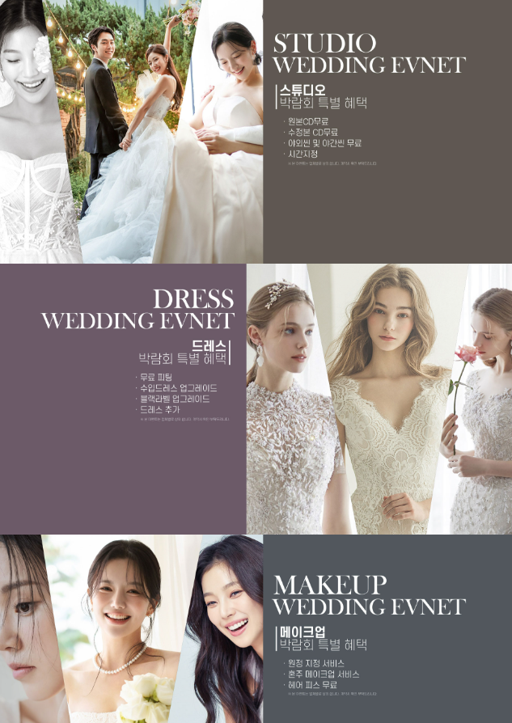
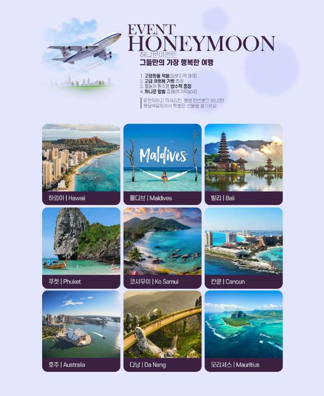
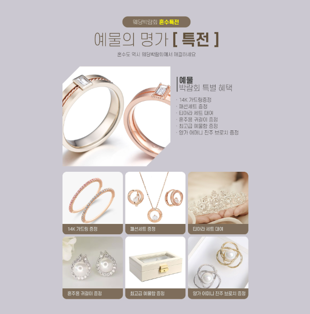
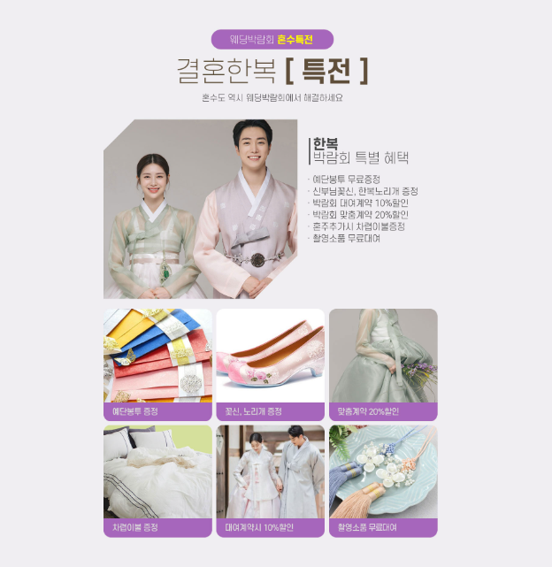

결혼 준비를 시작하면 웨딩홀과 스튜디오, 드레스, 메이크업, 예물과 예복, 혼수까지 여러 항목을 동시에 알아보게 됩니다. 동탄 롯데백화점 웨딩박람회를 방문하기 전 희망 예식 시기와 지역, 예상 하객 수, 전체 예산을 정리해두면 필요한 상담을 효율적으로 받을 수 있습니다. 행사에서는 기본 가격뿐 아니라 실제 포함 항목과 추가 비용, 일정 변경과 취소 조건까지 같은 기준으로 비교하는 것이 중요합니다.
동탄 롯데백화점 웨딩박람회에서는 무엇을 확인할까요?
웨딩박람회에서는 결혼을 준비하면서 필요한 여러 분야의 정보를 한자리에서 살펴보고 비교해볼 수 있습니다.
동탄과 화성 지역에서 예식을 준비하고 있다면 원하는 예식 일정과 예상 예산을 기준으로 필요한 항목을 정리하면서 자신에게 맞는 결혼 준비 방향을 알아보는 데 활용할 수 있습니다.
동탄뿐 아니라 수원과 용인, 오산 등 인접 지역의 예식장도 함께 비교할 수 있으므로 이동 거리와 주차, 하객 접근성, 예식 시간대까지 고려해 상담 내용을 정리해보는 것이 좋습니다.

웨딩홀부터 스드메까지 필요한 항목을 비교해보세요
결혼 준비에는 웨딩홀과 스드메뿐 아니라 예물과 예복, 혼수 등 여러 분야의 선택이 필요합니다. 각각의 구성과 조건을 확인하면서 비교해보는 것이 좋습니다.
웨딩홀은 보증 인원과 식대, 대관료를 확인하고, 스드메는 촬영 원본과 수정본, 드레스 등급, 메이크업 담당자 지정 여부처럼 최종 비용에 영향을 주는 항목까지 확인하세요.

💒 웨딩홀
희망하는 예식 지역과 일정, 예상 하객 수를 기준으로 조건을 비교해보세요.
👰 스드메
스튜디오와 드레스, 메이크업의 구성과 포함 항목을 확인해보세요.
💍 예물·예복
원하는 디자인과 필요한 품목, 예상 예산을 미리 정리해보세요.
🏠 혼수
신혼집에 필요한 가전과 가구의 우선순위를 정해 비교해보세요.
방문 전에 일정과 예산을 미리 정리해보세요
여러 업체의 상담을 한자리에서 받게 되면 다양한 조건과 선택지를 접하게 될 수 있습니다. 방문 전에 자신이 원하는 기준을 미리 정리하면 필요한 정보를 비교하기가 더 편리합니다.

계약 전에는 포함 항목과 추가 조건을 확인하세요
웨딩 관련 상품은 기본 가격만 비교하기보다 실제로 포함되는 서비스와 선택 옵션에 따른 추가 비용까지 함께 확인하는 것이 좋습니다.
일정 변경과 계약 취소 조건 등도 미리 살펴보고 여러 조건을 충분히 비교한 뒤 결정해보세요.
당일 계약 혜택이 안내되더라도 적용 조건과 유효기간을 확인하고, 상담 과정에서 안내받은 서비스와 사은품이 계약서에 정확히 기재되어 있는지 확인한 뒤 서명하는 것이 좋습니다.

상담 순서와 최종 비용을 같은 기준으로 비교하세요
현장에서 여러 상담을 연속으로 받으면 업체별 조건이 섞이기 쉽습니다. 웨딩홀과 예식 일정을 먼저 확인한 뒤 스드메, 예물·예복, 혼수 순서로 상담하면 전체 일정을 정리하기 편리합니다.
| 웨딩홀 | 가능 날짜, 보증 인원, 식대, 대관료, 주차와 교통 편의성을 확인합니다. |
|---|---|
| 스드메 | 기본 구성, 선택 범위, 촬영 원본·수정본, 드레스와 메이크업 추가금을 비교합니다. |
| 예물·예복 | 포함 품목, 제작 기간, 디자인 변경, 수선과 사후관리 조건을 확인합니다. |
| 혼수 | 신혼집에 필요한 품목과 설치 일정, 배송비와 추가 비용을 확인합니다. |
| 계약 조건 | 총 결제금액, 계약금, 잔금 일정, 변경·취소와 환불 기준을 확인합니다. |
상담 내용을 같은 형식으로 기록하세요
업체명, 기본 금액, 포함 항목, 추가금, 혜택 적용 조건을 휴대전화 메모에 정리하세요.
월 납부금이나 할인 금액만 보지 말고 실제 지불하는 총금액을 기준으로 비교하는 것이 좋습니다.